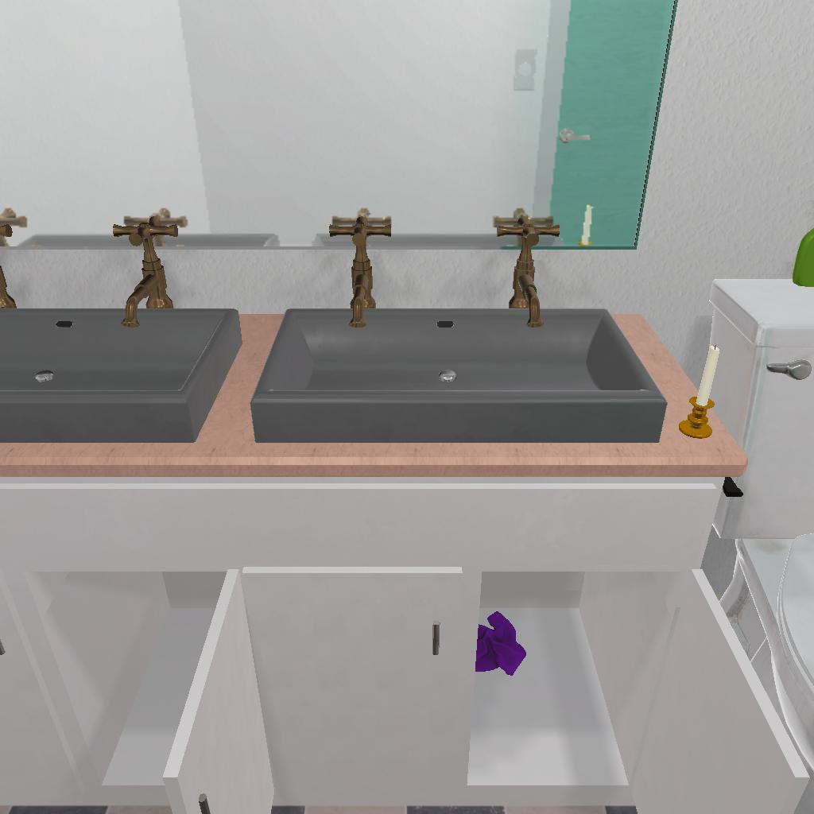

---------------------------------------------------------task: 9---------------------------------------------------------
--------------------------------------------------------------------------------------------------------------------------------------------------------------------
--------------------------------------------------------------------------------------------------------------------------------------------------------------------
Step:--------------------------------------------------------------------------9-------------------------------------------------------------------------------
----------------------------------------
VLM Prompt:
Image1:
Image2:
Image3:
**Instruction**
1. Analyze the provided images to identify all visible household objects and compare the difference between images (e.h. whether the object is opened or not and taken on hand or not), focusing on those relevant to the task description "put some soapbottle on toilet."
2. Use the analysis of images and the task hint "The agent must find an object of the desired type, pick it up, find the correct location to place it, and put it down there." to answer the question: what is the most reasonable action in the choices for the task description "put some soapbottle on toilet"?
3. Decide and write the answer using the template: The answer is: (i): , where i is the real number. If there is no desired object in images, search every place based on **Initial Observation** to find the object. And if no one is exactly correct, choose a similar answer.
**Initial Observation**
You are in the middle of a room. Looking quickly around you, you can see bathtub (1), bathtubbasin (1), toilet (1), cabinet (1-4), sink (1-2), countertop (1), sinkbasin (1-2), toiletpaperhanger (1), towelholder (1), garbagecan (1), handtowelholder (1)
**Answer Choices**
(1): go to bathtub 1
(2): go to bathtubbasin 1
(3): go to toilet 1
(4): go to cabinet 3
(5): go to sink 1
(6): go to sink 2
(7): go to countertop 1
(8): go to sinkbasin 1
(9): go to sinkbasin 2
(10): go to toiletpaperhanger 1
(11): go to towelholder 1
(12): go to garbagecan 1
(13): go to handtowelholder 1
(14): open cabinet 4
(15): close cabinet 4
(16): examine cabinet 4
**Answer**
Let's think step by step by following the instructions.
----------------------------------------
----------------------------------------
Original Response:
First, we need to identify all visible household objects in the provided images that are relevant to the task description "put some soapbottle on toilet." Upon analyzing the images, we can see that there are sinks, cabinets, and a countertop visible, but there is no soap bottle visible in any of the images. We can also notice that cabinet 4 is slightly open in all images.
Since there is no soap bottle visible, we must search every place based on the Initial Observation to find the object. According to the Initial Observation, there are multiple cabinets that we can check for a soap bottle. Since cabinet 4 is already slightly open, it is reasonable to assume that the soap bottle might be inside it.
The most reasonable action from the choices provided would be to fully open cabinet 4 and examine its contents to find a soap bottle. Therefore, the answer is:
The answer is: (14): open cabinet 4
----------------------------------------
----------------------------------------
>>> Refine Original VLM Response and Get Pure Action: open cabinet 4
----------------------------------------
-----------------------------------------------------------------
Running time: 10.211461544036865 seconds
Total Money: 4.417430000000002
-----------------------------------------------------------------
-----------------------------------------------------------------
Text Observation:You open the cabinet 4. The cabinet 4 is open. In it, you see a faucet 1, a faucet 2, a cloth 1, a candle 1, and a spraybottle 1.
-----------------------------------------------------------------
UNSUCCEED